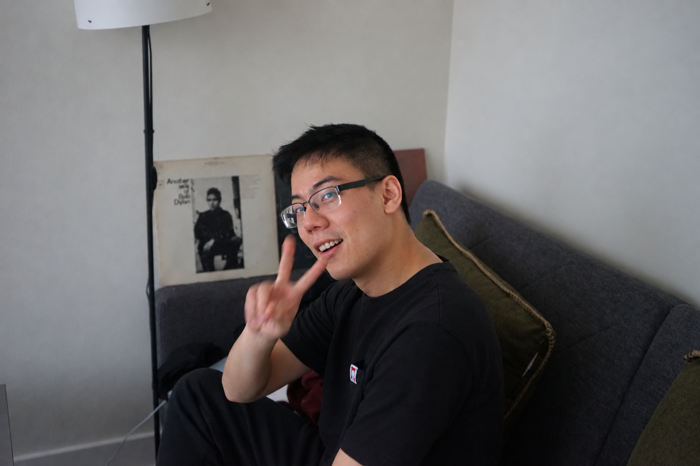

Sociology · Yale University
Peter Boseong Yun
Ph.D. candidate in Sociology
Expected 2028
Introduction.
I study how technology shapes work, gender, and inequality.
My research sits at the intersection of labor markets, organizations, gender, and science and technology. I use quantitative and computational methods to examine how occupations change, how new forms of expertise gain value, and how those changes create unequal opportunities.
I am currently a Ph.D. candidate in Sociology at Yale University, where I also earned an M.A. in Statistics & Data Science. Before Yale, I studied public policy at the University of Chicago and political science and women’s studies at the University of Michigan.